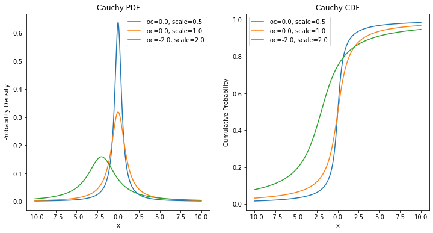

import numpy as np
import matplotlib.pyplot as plt
import EbayesThreshhttps://cran.r-project.org/web/packages/EbayesThresh/EbayesThresh.pdf
Import
확인용 import
from scipy.stats import norm
from scipy.optimize import minimizebeta.cauchy
Function beta for the quasi-Cauchy prior
- Description
Given a value or vector x of values, find the value(s) of the function \(\beta(x) = g(x)/\phi(x) − 1\), where \(g\) is the convolution of the quasi-Cauchy with the normal density \(\phi(x)\).
x가 입력되면 코시 분포와 정규 분포를 혼합해서 함수 베타 구하기
x = np.array([-2,1,0,-4,8,50])phix = norm.pdf(x)
phixarray([5.39909665e-02, 2.41970725e-01, 3.98942280e-01, 1.33830226e-04,
5.05227108e-15, 0.00000000e+00])- x의 확률밀도함수pdf 구하기
j = (x != 0)
jarray([ True, True, False, True, True, True])- 0이 아닌 인덱스만 얻기
beta = x
betaarray([-2, 1, 0, -4, 8, 50])beta = np.where(j == False, -1/2, beta)
betaarray([-2. , 1. , -0.5, -4. , 8. , 50. ])- j가 False 즉 0이면 -1/2를 넣고 아니면 beta값 그대로 넣기
beta[j] = (norm.pdf(0) / phix[j] - 1) / (x[j] ** 2) - 1
betaRuntimeWarning: divide by zero encountered in divide
beta[j] = (norm.pdf(0) / phix[j] - 1) / (x[j] ** 2) - 1array([ 5.97264025e-01, -3.51278729e-01, -5.00000000e-01, 1.85247374e+02,
1.23379625e+12, inf])0의 확률밀도함수pdf에서 x의 확률밀도함수phix로 나누어서 1을 빼고 그것을 x 중 0이 아닌 값들에 제곱한 값으로 나눠 1을 빼기
\(\beta(x) = \begin{cases} x & \text{ if } x = 0 \\ \frac{\frac{\phi(0)}{\phi(x)}-1}{x^2} - 1 & \\ \text{ if } x \ne 0\end{cases}\)
R code
beta.cauchy <- function(x) {
#
# Find the function beta for the mixed normal prior with Cauchy
# tails. It is assumed that the noise variance is equal to one.
#
phix <- dnorm(x)
j <- (x != 0)
beta <- x
beta[!j] <- -1/2
beta[j] <- (dnorm(0)/phix[j] - 1)/x[j]^2 - 1
return(beta)
}결과
- Python
EbayesThresh.beta_cauchy(np.array([-2,1,0,-4,8,50]))/home/csy/Dropbox/sy_hub/posts/1_Note/EbayesThresh/utils.py:26: RuntimeWarning: divide by zero encountered in divide
beta[j] = (norm.pdf(0) / phix[j] - 1) / (x[j] ** 2) - 1array([ 5.97264025e-01, -3.51278729e-01, -5.00000000e-01, 1.85247374e+02,
1.23379625e+12, inf])- R
> beta.cauchy(c(-2,1,0,-4,8,50))
[1] 5.972640e-01 -3.512787e-01 -5.000000e-01 1.852474e+02 1.233796e+12 Inf- 무한히 꼬리가 긴 분포를 가진 코시분포
import numpy as np
import matplotlib.pyplot as plt
from scipy.stats import cauchy
# 모수 설정
loc_values = [0.0, 0.0, -2.0] # 위치 모수
scale_values = [0.5, 1.0, 2.0] # 척도 모수
# 그래프 그리기
x = np.linspace(-10, 10, 1000)
plt.figure(figsize=(12, 6))
# PDF 그리기
plt.subplot(1, 2, 1)
for loc, scale in zip(loc_values, scale_values):
plt.plot(x, cauchy.pdf(x, loc, scale), label=f'loc={loc}, scale={scale}')
plt.title('Cauchy PDF')
plt.xlabel('x')
plt.ylabel('Probability Density')
plt.legend()
# CDF 그리기
plt.subplot(1, 2, 2)
for loc, scale in zip(loc_values, scale_values):
plt.plot(x, cauchy.cdf(x, loc, scale), label=f'loc={loc}, scale={scale}')
plt.title('Cauchy CDF')
plt.xlabel('x')
plt.ylabel('Cumulative Probability')
plt.legend()
plt.show()
beta.laplace
Function beta for the Laplace prior
- Description
Given a single value or a vector of \(x\) and \(s\), find the value(s) of the function \(\beta(x; s, a) = \frac{g(x; s, a)}{f_n(x; 0, s)}−1\), where \(f_n(x; 0, s)\) is the normal density with mean \(0\) and standard deviation \(s\), and \(g\) is the convolution of the Laplace density with scale parameter a, \(γa(\mu)\), with the normal density \(f_n(x; µ, s)\) with mean mu and standard deviation \(s\).
평균이 \(\mu\)이며, 스케일 파라메터 a를 가진 라플라스와 정규분포의 합성함수 \(g\)와 평균이 0이고 표준편차가s인 f로 계산되는 함수 베타
# x = np.array([-2,1,0,-4,8,50])
x = 2.14
s = 1
# s = np.arange(1, 7)
a = 0.5- s는 표준편차
- a는 Laplaxe prior모수, 이 값이 클수록 부포 모양이 뾰족해진다.
x = np.abs(x)
x2.14- 확률변수 x에 절대값 취하고
xpa = x/s + s*a
xpa2.64xma = x/s - s*a
xma1.6400000000000001rat1 = 1/xpa
rat10.3787878787878788xpa < 35Truerat1[xpa < 35]array([0.37878788])- 표준정규분포 누적 분포 함수cdf / 표준정규분포 밀도함수 pdf
if isinstance(rat1, (int, float, str, bool)) and xpa < 35:
rat1 = norm.cdf(-xpa) / norm.pdf(xpa)
elif isinstance(rat1, (int, float, str, bool)) and xpa > 35:
rat1 = rat1
else:
rat1[xpa < 35] = norm.cdf(-xpa[xpa < 35]) / norm.pdf(xpa[xpa < 35])rat10.33890303155852075rat2 = 1/np.abs(xma)
rat20.6097560975609756if isinstance(xma, (int, float, str, bool)) and xma > 35:
xma = 35
elif isinstance(xma, (int, float, str, bool)) and xma < 35:
xma = xma
else:
xma[xma > 35] = 35xma1.6400000000000001if isinstance(rat1, (int, float, str, bool)) and xma > -35:
rat2 = norm.cdf(xma) / norm.pdf(xma)
elif isinstance(rat1, (int, float, str, bool)) and xma < -35:
rat2 = rat2
else:
rat2[xma > -35] = norm.cdf(xma[xma > -35]) / norm.pdf(xma[xma > -35])rat29.133199429298308- beta = \(\frac{g(x; s, a)}{f_n(x; 0, s)}−1\)
- g = 스케일 파라메터 a를 가진 라플라스 밀도의 convolution + \(\gamma (u ; a)\)
- 단, The Laplace density is given by \(\gamma (u ; a) = \frac{1}{2} a e^{-a |u|}\) and is also known as the double exponential density.
beta = (a * s) / 2 * (rat1 + rat2) - 1
beta1.3680256152142074- R code
beta.laplace <- function(x, s = 1, a = 0.5) {
#
# The function beta for the Laplace prior given parameter a and s (sd)
#
x <- abs(x)
xpa <- x/s + s*a
xma <- x/s - s*a
rat1 <- 1/xpa
rat1[xpa < 35] <- pnorm( - xpa[xpa < 35])/dnorm(xpa[xpa < 35])
rat2 <- 1/abs(xma)
xma[xma > 35] <- 35
rat2[xma > -35] <- pnorm(xma[xma > -35])/dnorm(xma[xma > -35])
beta <- (a * s) / 2 * (rat1 + rat2) - 1
return(beta)
}결과
- Python
EbayesThresh.beta_laplace(np.array([-2,1,0,-4,8,50]),s=1)array([ 8.89852030e-001, -3.80041717e-001, -5.61817772e-001,
2.85459467e+002, 1.02698062e+012, 6.34453954e+265])EbayesThresh.beta_laplace(-2,s=1,a=0.5)0.8898520296511427EbayesThresh.beta_laplace(np.array([-2,1,0,-4,8,50]),s=np.arange(1, 7))array([ 8.89852030e-01, -3.03909953e-01, -2.26276543e-01, -3.97301589e-02,
1.53950123e-01, 5.64694733e+06])- R
> beta.laplace(c(-2,1,0,-4,8,50), s=1)
[1] 8.898520e-01 -3.800417e-01 -5.618178e-01 2.854595e+02 1.026981e+12 6.344540e+265
> beta.laplace(-2, s=1, a=0.5)
[1] 0.889852
> beta.laplace(c(-2,1,0,-4,8,50), s=1:6, a=1)
[1] 0.890821055 -0.129919250 -0.086229104 -0.005203193 0.054213718 112.493576777cauchy_medzero
the objective function that has to be zeroed, component by component, to find the posterior median when the quasi-Cauchy prior is used. x is the parameter vector, z is the data vector, w is the weight x and z may be scalars
- quasi-Cauchy prior에서 사후 중앙값 찾기 위한 함수
- x,z는 벡터일수도 있고, 스칼라일 수 도 있다.
# x = np.array([-2,1,0,-4,8,50])
x = 4
# z = np.array([1,0,2,3,-1,-1])
z = 5
w = 0.5hh = z - x
hh1dnhh = norm.pdf(hh)
dnhh0.24197072451914337yleft = norm.cdf(hh) - z * dnhh + ((z * x - 1) * dnhh * norm.cdf(-x)) / norm.pdf(x)
yleft0.7194871459755684yright2 = 1 + np.exp(-z**2 / 2) * (z**2 * (1 / w - 1) - 1)
yright21.00008943967613yright2 / 2 - yleft-0.21944242613750342- R코드
cauchy.medzero <- function(x, z, w) {
#
# the objective function that has to be zeroed, component by
# component, to find the posterior median when the quasi-Cauchy prior
# is used. x is the parameter vector, z is the data vector, w is the
# weight x and z may be scalars
#
hh <- z - x
dnhh <- dnorm(hh)
yleft <- pnorm(hh) - z * dnhh + ((z * x - 1) * dnhh * pnorm( - x))/
dnorm(x)
yright2 <- 1 + exp( - z^2/2) * (z^2 * (1/w - 1) - 1)
return(yright2/2 - yleft)
}결과
- Python
- 벡터, 스칼라일때 가능한지 확인
EbayesThresh.cauchy_medzero(np.array([-2,1,0,-4,8,50]),np.array([1,0,2,3,-1,-1]),0.5)/home/csy/Dropbox/sy_hub/posts/1_Note/EbayesThresh/utils.py:50: RuntimeWarning: invalid value encountered in divide
yleft = norm.cdf(hh) - z * dnhh + ((z * x - 1) * dnhh * norm.cdf(-x)) / norm.pdf(x)array([-0.25356559, 0. , -0.09859737, -0.45556313, 0.5 ,
nan])EbayesThresh.cauchy_medzero(4,5,0.5)-0.21944242613750342- R
> cauchy.medzero(c(-2,1,0,-4,8,50),c(1,0,2,3,-1,-1),0.5)
[1] -0.25356559 0.00000000 -0.09859737 -0.45556313 0.50000000 NaN
> cauchy.medzero(4,5,0.5)
[1] -0.2194424cauchy_threshzero
- cauchy 임계값 찾기 위한 것
- 아래에서 반환되는 y가 0에 가깝도록 만들어주는 z를 찾는 과정
z = np.array([1,0,2,3,-1,-1])
w = 0.5y = norm.cdf(z) - z * norm.pdf(z) - 1/2 - (z**2 * np.exp(-z**2/2) * (1/w - 1))/2
yarray([-0.20389131, 0. , 0.09859737, 0.43536407, -0.40263935,
-0.40263935])\(y = pnorm(z) - z \times dnorm(z) - \frac{1}{2} - \frac{z^2 \exp (\frac{z^2}{2})(\frac{1}{w} - 1)}{2}\)
- R 코드
cauchy.threshzero <- function(z, w) {
#
# The objective function that has to be zeroed to find the Cauchy
# threshold. z is the putative threshold vector, w is the weight w
# can be a vector
#
y <- pnorm(z) - z * dnorm(z) - 1/2 -
(z^2 * exp( - z^2/2) * (1/w - 1))/2
return(y)
}결과
- Python
EbayesThresh.cauchy_threshzero(np.array([1,0,2,3,-1,-1]),0.5)array([-0.20389131, 0. , 0.09859737, 0.43536407, -0.40263935,
-0.40263935])EbayesThresh.cauchy_threshzero(np.array([1,0,2,3,-1,-1]),np.array([0.5,0.4,0.3,0.2,0,0.1]))/home/csy/Dropbox/sy_hub/posts/1_Note/EbayesThresh/utils.py:56: RuntimeWarning: divide by zero encountered in divide
y = norm.cdf(z) - z * norm.pdf(z) - 1/2 - (z**2 * np.exp(-z**2/2) * (1/w - 1))/2array([-0.20389131, 0. , -0.26229672, 0.28539262, -inf,
-2.82876199])- R
> cauchy.threshzero(c(1,0,2,3,-1,-1),0.5)
[1] -0.20389131 0.00000000 0.09859737 0.43536407 -0.40263935 -0.40263935
cauchy.threshzero(c(1,0,2,3,-1,-1), c(0.5,0.4,0.3,0.2,0,0.1))
[1] -0.2038913 0.0000000 -0.2622967 0.2853926 -Inf -2.8287620Mad(Median Absolute Deviation)
중앙값 절대 편차, 분산이나 퍼진 정도 확인 가능
결과
- Python
EbayesThresh.mad(np.array([1, 2, 3, 3, 4, 4, 4, 5, 5.5, 6, 6, 6.5, 7, 7, 7.5, 8, 9, 12, 52, 90]))2.9652- R
> mad(c(1, 2, 3, 3, 4, 4, 4, 5, 5.5, 6, 6, 6.5, 7, 7, 7.5, 8, 9, 12, 52, 90))
[1] 2.9652wfromt
Description
Given a value or vector of thresholds and sampling standard deviations (sd equals 1 for Cauchy prior), find the mixing weight for which this is(these are) the threshold(s) of the posterior median estimator. If a vector of threshold values is provided, the vector of corresponding weights is returned.
주어진 임계값과 표준편차에 대해, posterior median estimator에서 이 임계값이 나오도록 하는 혼합 가중치를 계산하는 함수가 제공된다.
# tt = np.array([2,3,5])
tt = 2.14
s = 1
prior = 'laplace"'
a = 0.5pr = prior[0:1]
pr'l'if pr == "l":
tma = tt / s - s * a
wi = 1 / np.abs(tma)
if isinstance(wi, (int, float, str, bool)) and tma > -35:
wi = norm.cdf(tma) / norm.pdf(tma)
elif isinstance(wi, (int, float, str, bool)) and tma < -35:
wi = wi
else:
wi[tma > -35] = norm.cdf(tma[tma > -35])/norm.pdf(tma[tma > -35])
wi = a * s * wi - EbayesThresh.beta_laplace(tt, s, a)tma1.6400000000000001wi3.1985740994349467if pr == "c":
dnz = norm.pdf(tt)
wi = 1 + (norm.cdf(tt) - tt * dnz - 1/2) / (np.sqrt(np.pi/2) * dnz * tt**2)
if isinstance(wi, np.ndarray):
for i in range(len(wi)):
if not np.isfinite(wi[i]):
wi[i] = 1
else:
if not np.isfinite(wi):
wi = 11 / wi0.31263931017782515- R코드
wfromt <- function(tt, s = 1, prior = "laplace", a = 0.5) {
#
# Find the weight that has posterior median threshold tt,
# given s (sd) and a.
#
pr <- substring(prior, 1, 1)
if(pr == "l"){
tma <- tt/s - s*a
wi <- 1/abs(tma)
wi[tma > -35] <- pnorm(tma[tma > -35])/dnorm(tma[tma > -35])
wi <- a * s * wi - beta.laplace(tt, s, a)
}
if(pr == "c") {
dnz <- dnorm(tt)
wi <- 1 + (pnorm(tt) - tt * dnz - 1/2)/
(sqrt(pi/2) * dnz * tt^2)
wi[!is.finite(wi)] <- 1
}
1/wi
}결과
- Python
EbayesThresh.wfromt(np.array([2,3,5]),prior='cachy')array([4.22963403e-01, 9.33799336e-02, 9.31590884e-05])EbayesThresh.wfromt(2,prior='cachy')0.4229634032635055EbayesThresh.wfromt(2,prior='laplace')0.3686337675493349- R
> wfromt(c(2,3,5),prior='cachy')
[1] 4.229634e-01 9.337993e-02 9.315909e-05
> wfromt(2,prior='cachy')
[1] 0.4229634
> wfromt(2,prior='laplace')
[1] 0.3686338wfromx
Description
The weight is found by marginal maximum likelihood. The search is over weights corresponding to threshold \(t_i\) in the range \([0, s_i \sqrt{2 log n}]\) if universalthresh=TRUE, where n is the length of the data vector and \((s_1, ..., s_n\)) (\(s_i\) is \(1\) for Cauchy prior) is the vector of sampling standard deviation of data (\(x_1, ..., x_n\)); otherwise, the search is over \([0, 1]\). The search is by binary search for a solution to the equation \(S(w) = 0\), where \(S\) is the derivative of the log likelihood. The binary search is on a logarithmic scale in \(w\). If the Laplace prior is used, the scale parameter is fixed at the value given for \(a\), and defaults to \(0.5\) if no value is provided. To estimate a as well as \(w\) by marginal maximum likelihood, use the routine wandafromx.
Suppose the vector \((x_1, \cdots, x_n)\) is such that \(x_i\) is drawn independently from a normal distribution with mean \(\theta_i\) and standard deviation \(s_i\) (\(s_i\) equals \(1\) for Cauchy prior). The prior distribution of the \(\theta_i\) is a mixture with probability \(1 − w\) of zero and probability \(w\) of a given symmetric heavy-tailed distribution. This routine finds the marginal maximum likelihood estimate of the parameter \(w\).
주어진 정규 분포 데이터에 대해 \(\theta_𝑖\)의 사전 분포가 주어진 상황에서, 모수 \(w\)의 최대우도 추정치를 계산하는 방법을 제공한다
s = np.concatenate((np.repeat(0, 90), np.repeat(5, 10)))
x = np.random.normal(0, s, size=100)
prior = "cauchy"
a = 0.5
universalthresh = Truepr = prior[0:1]
pr'c'if pr == "c":
s = 1if universalthresh:
tuniv = np.sqrt(2 * np.log(len(x))) * s
wlo = EbayesThresh.wfromt(tuniv, s, prior, a)
wlo = np.max(wlo)
else:
wlo = 0if pr == "l":
beta = EbayesThresh.beta_laplace(x, s, a)
elif pr == "c":
beta = EbayesThresh.beta_cauchy(x)whi = 1
beta = np.minimum(beta, 1e20)
shi = np.sum(beta / (1 + beta))if shi >= 0:
shi = 1slo = np.sum(beta / (1 + wlo * beta))if slo <= 0:
slo = wlofor _ in range(1,31):
wmid = np.sqrt(wlo * whi)
smid = np.sum(beta / (1 + wmid * beta))
if smid == 0:
smid = wmid
if smid > 0:
wlo = wmid
else:
whi = wmidnp.sqrt(wlo * whi)0.08644292644513768- R코드
wfromx <- function (x, s = 1, prior = "laplace", a = 0.5,
universalthresh = TRUE) {
#
# Given the vector of data x and s (sd),
# find the value of w that zeroes S(w) in the
# range by successive bisection, carrying out nits harmonic bisections
# of the original interval between wlo and 1.
#
pr <- substring(prior, 1, 1)
if(pr == "c")
s = 1
if(universalthresh) {
tuniv <- sqrt(2 * log(length(x))) * s
wlo <- wfromt(tuniv, s, prior, a)
wlo <- max(wlo)
} else
wlo = 0
if(pr == "l")
beta <- beta.laplace(x, s, a)
if(pr == "c")
beta <- beta.cauchy(x)
whi <- 1
beta <- pmin(beta, 1e20)
shi <- sum(beta/(1 + beta))
if(shi >= 0)
return(1)
slo <- sum(beta/(1 + wlo * beta))
if(slo <= 0)
return(wlo)
for(j in (1:30)) {
wmid <- sqrt(wlo * whi)
smid <- sum(beta/(1 + wmid * beta))
if(smid == 0)
return(wmid)
if(smid > 0)
wlo <- wmid
else
whi <- wmid
}
return(sqrt(wlo * whi))
}결과
- Python
EbayesThresh.wfromx(x= np.random.normal(0, np.concatenate((np.repeat(0, 90), np.repeat(5, 10))), size=100), prior = "cauchy")0.11202819672131105- R
> wfromx(x = rnorm(100, s = c(rep(0,90),rep(5,10))), prior = "cauchy")
[1] 0.116067isotone
Isotonic Regression은 입력 변수에 따른 출력 변수의 단조 증가(monotonic increasing) 또는 감소(monotonic decreasing) 패턴을 찾는 방법
beta = EbayesThresh.beta_cauchy(np.array([-2,1,0,-4]))
w = np.ones(len(beta))
aa = w + 1/beta
x = w + aa
wt = 1/aa**2
increasing = Falsenn = len(x)if nn == 1:
x = xif not increasing:
x = -xip = np.arange(1, nn+1)
dx = np.diff(x)
nx = len(x)jmax = np.arange(nx)[(np.concatenate((dx <= 0, [False])) & np.concatenate(([True], dx > 0)))]
jmin = np.arange(nx)[(np.concatenate((dx > 0, [True])) & np.concatenate(([False], dx <= 0)))]jb=0
ind = np.arange(jmax[jb], jmin[jb]+1)
wtn = np.sum(wt[ind])x[jmax[jb]] = np.sum(wt[ind] * x[ind]) / wtnwt[jmax[jb]] = wtnx[jmax[jb]+1:jmin[jb]+1] = np.nan# Clean up within iteration, eliminating the parts of sequences that
# were set to NA
ind = ~np.isnan(x)
x = x[ind]
wt = wt[ind]
ip = ip[ind]
dx = np.diff(x)
nx = len(x)# Final cleanup: reconstruct z at all points by repeating the pooled
# values the appropriate number of times
jj = np.zeros(nn, dtype=int)
jj[ip - 1] = 1
z = x[np.cumsum(jj) - 1]if not increasing:
z = -zzarray([3.67430141, 0.76041105, 0.76041105, 0.76041105])R코드
isotone <- function(x, wt = rep(1, length(x)), increasing = FALSE) {
#
# find the weighted least squares isotone fit to the
# sequence x, the weights given by the sequence wt
#
# if increasing == TRUE the curve is set to be increasing,
# otherwise to be decreasing
#
# the vector ip contains the indices on the original scale of the
# breaks in the regression at each stage
#
nn <- length(x)
if(nn == 1)
return(x)
if(!increasing)
x <- - x
ip <- (1:nn)
dx <- diff(x)
nx <- length(x)
while((nx > 1) && (min(dx) < 0)) {
#
# do single pool-adjacent-violators step
#
# find all local minima and maxima
#
jmax <- (1:nx)[c(dx <= 0, FALSE) & c(TRUE, dx > 0)]
jmin <- (1:nx)[c(dx > 0, TRUE) & c(FALSE, dx <= 0)]
# do pav step for each pair of maxima and minima
#
# add up weights within subsequence that is pooled
# set first element of subsequence to the weighted average
# the first weight to the sum of the weights within the subsequence
# and remainder of the subsequence to NA
#
for(jb in (1:length(jmax))) {
ind <- (jmax[jb]:jmin[jb])
wtn <- sum(wt[ind])
x[jmax[jb]] <- sum(wt[ind] * x[ind])/wtn
wt[jmax[jb]] <- wtn
x[(jmax[jb] + 1):jmin[jb]] <- NA
}
#
# clean up within iteration, eliminating the parts of sequences that
# were set to NA
#
ind <- !is.na(x)
x <- x[ind]
wt <- wt[ind]
ip <- ip[ind]
dx <- diff(x)
nx <- length(x)
}
#
# final cleanup: reconstruct z at all points by repeating the pooled
# values the appropriate number of times
#
jj <- rep(0, nn)
jj[ip] <- 1
z <- x[cumsum(jj)]
if(!increasing)
z <- - z
return(z)
}결과
- Python
beta = EbayesThresh.beta_cauchy(np.array([-2,1,0,-4]))
w = np.ones(len(beta))
aa = w + 1/beta
ps = w + aa
ww = 1/aa**2
wnew = EbayesThresh.isotone(ps, ww, increasing = False)
wnew[3.67430141208924, 0.760411047043364, 0.760411047043364, 0.760411047043364]R
> beta <- beta.cauchy(c(-2,1,0,-4))
> w <- rep(1, length(x))
> aa = w + 1/beta
> ps = w + aa
> ww = 1/aa**2
> wnew = isotone(ps, ww, increasing = FALSE)
> wnew
[1] 3.674301 0.760411 0.760411 0.760411wmonfromx
Given a vector of data, find the marginal maximum likelihood choice of weight sequence subject to the constraints that the weights are monotone decreasing
데이터에 대해 가중치 시퀀스를 선택하는 과정에서 조건이 주어지는데, 이 가중치 시퀀스는 각각의 가중치 값이 단조 감소해야 하며, 주어진 데이터에 대한 최대 우도를 갖도록 선택되어야 함.
xd = np.random.normal(0, 1, size=10)
prior = "laplace"
a = 0.5
tol = 1e-08
maxits = 20pr = prior[0:1]
pr'l'nx = len(xd)
nx10wmin = EbayesThresh.wfromt(np.sqrt(2 * np.log(len(xd))), prior=prior, a=a)
wmin0.31029680918570224winit = 1
winit1if pr == "l":
beta = EbayesThresh.beta_laplace(xd, a=a)
if pr == "c":
beta = EbayesThresh.beta_cauchy(xd)w = np.repeat(winit, len(beta))
warray([1, 1, 1, 1, 1, 1, 1, 1, 1, 1])for j in range(maxits):
aa = w + 1 / beta
ps = w + aa
ww = 1 / aa ** 2
wnew = EbayesThresh.isotone(ps, ww, increasing=False)
wnew = np.maximum(wmin, wnew)
wnew = np.minimum(1, wnew)
zinc = np.max(np.abs(np.diff(wnew)))
w = wnew
# if zinc < tol:
# return wwarnings.filterwarnings("More iterations required to achieve convergence")R코드
wmonfromx <- function (xd, prior = "laplace", a = 0.5,
tol = 1e-08, maxits = 20) {
#
# Find the monotone marginal maximum likelihood estimate of the
# mixing weights for the Laplace prior with parameter a. It is
# assumed that the noise variance is equal to one.
#
# Find the beta values and the minimum weight
#
# Current version allows for standard deviation of 1 only.
#
pr <- substring(prior, 1, 1)
nx <- length(xd)
wmin <- wfromt(sqrt(2 * log(length(xd))), prior=prior, a=a)
winit <- 1
if(pr == "l")
beta <- beta.laplace(xd, a=a)
if(pr == "c")
beta <- beta.cauchy(xd)
# now conduct iterated weighted least squares isotone regression
#
w <- rep(winit, length(beta))
for(j in (1:maxits)) {
aa <- w + 1/beta
ps <- w + aa
ww <- 1/aa^2
wnew <- isotone(ps, ww, increasing = FALSE)
wnew <- pmax(wmin, wnew)
wnew <- pmin(1, wnew)
zinc <- max(abs(range(wnew - w)))
w <- wnew
if(zinc < tol)
return(w)
}
warning("More iterations required to achieve convergence")
return(w)
}결과
- Python
EbayesThresh.wmonfromx(xd = np.random.normal(0, 1, size=10), prior = "laplace")array([0.31029681, 0.31029681, 0.31029681, 0.31029681, 0.31029681,
0.31029681, 0.31029681, 0.31029681, 0.31029681, 0.31029681])- R
> wmonfromx(xd <- rnorm(10,0,1), prior = "laplace")
[1] 0.3102968 0.3102968 0.3102968 0.3102968 0.3102968 0.3102968 0.3102968 0.3102968 0.3102968 0.3102968wmonfromx(xd=rnorm(5, s = 1), prior = “laplace”, a = 0.5, tol = 1e-08, maxits = 20) [1] 0.9363989 0.9363989 0.9363989 0.4522184 0.4522184
threshld
임계값 t를 이용해서 데이터 조정
x = np.array(range(-5,5))
t=1.4
hard=Falseif hard:
z = x * (np.abs(x) >= t)
else:
z = np.sign(x) * np.maximum(0, np.abs(x) - t)zarray([-3.6, -2.6, -1.6, -0.6, -0. , 0. , 0. , 0.6, 1.6, 2.6])R코드
threshld <- function(x, t, hard = TRUE) {
#
# threshold the data x using threshold t
# if hard=TRUE use hard thresholding
# if hard=FALSE use soft thresholding
if(hard) z <- x * (abs(x) >= t) else {
z <- sign(x) * pmax(0, abs(x) - t)
}
return(z)
}결과
- Python
EbayesThresh.threshld(np.array(range(-5,5)), t=1.4, hard=False)array([-3.6, -2.6, -1.6, -0.6, -0. , 0. , 0. , 0.6, 1.6, 2.6])- R
> threshld(as.array(seq(-5, 5)), t=1.4, hard=FALSE)
[1] -3.6 -2.6 -1.6 -0.6 0.0 0.0 0.0 0.6 1.6 2.6 3.6negloglik_laplace
Marginal negative log likelihood function for laplace prior.
- 라플라스 프라이어에 대한 한계음의로그우도함수 계산
xpar = np.array([0.5,0.6,0.3])
xx = np.array([1,2,3,4,5])
ss = np.array([1])
tlo = np.sqrt(2 * np.log(len(np.array([1,2,3,4,5])))) * 1
thi = np.array([0,0,0])a = xpar[1]
a0.6wlo = EbayesThresh.wfromt(thi, ss, a=a)
wloarray([1., 1., 1.])whi = EbayesThresh.wfromt(tlo, ss, a=a)
whiarray([0.44528236])wlo = np.max(wlo)
wlo1.0whi = np.min(whi)
whi0.44528236200207744loglik = np.sum(np.log(1 + (xpar[0] * (whi - wlo) + wlo) *
EbayesThresh.beta_laplace(xx, ss, a)))
-loglik-16.797273710172206R코드
negloglik.laplace <- function(xpar, xx, ss, tlo, thi) {
#
# Marginal negative log likelihood function for laplace prior.
# Constraints for thresholds need to be passed externally.
#
# xx :data
# xpar :vector of two parameters:
# xpar[1] : a value between [0, 1] which will be adjusted to range of w
# xpar[2] : inverse scale (rate) parameter ("a")
# ss :vector of standard deviations
# tlo :lower bound of thresholds
# thi :upper bound of thresholds
#
a <- xpar[2]
# Calculate the range of w given a, using negative monotonicity
# between w and t
wlo <- wfromt(thi, ss, a = a)
whi <- wfromt(tlo, ss, a = a)
wlo <- max(wlo)
whi <- min(whi)
loglik <- sum(log(1 + (xpar[1] * (whi - wlo) + wlo) *
beta.laplace(xx, ss, a)))
return(-loglik)
}결과
- Python
xpar = np.array([0.5,0.6,0.3])
xx = np.array([1,2,3,4,5])
ss = np.array([1])
tlo = np.sqrt(2 * np.log(len(np.array([1,2,3,4,5])))) * 1
thi = np.array([0,0,0])EbayesThresh.negloglik_laplace(xpar, xx, ss, tlo, thi)-16.797273710172206- R
> xpar <- c(0.5, 0.6, 0.3)
> xx <- c(1, 2, 3, 4, 5)
> ss <- c(1)
> tlo <- sqrt(2 * log(length(c(1, 2, 3, 4, 5)))) * 1
> thi <- c(0, 0, 0)
> negloglik.laplace(xpar, xx, ss, tlo, thi)
[1] -16.79727postmean_cauchy
Find the posterior mean for the quasi-Cauchy prior with mixing weight w given data x, which may be a scalar or a vector.
- quasi-Cauch에 대한 사후 평균 구하기
x = np.array([-2,1,0,-4,8,50], dtype=float)
w = 0.5muhat = xind = (x == 0)
indarray([False, False, True, False, False, False])x = x[~ind]
xarray([-2., 1., -4., 8., 50.])ex = np.exp(-x**2/2)
exarray([1.35335283e-01, 6.06530660e-01, 3.35462628e-04, 1.26641655e-14,
0.00000000e+00])z = w * (x - (2 * (1 - ex))/x)
zarray([-0.56766764, 0.10653066, -1.75008387, 3.875 , 24.98 ])z = z / (w * (1 - ex) + (1 - w) * ex * x**2)
zarray([-0.80748973, 0.21306132, -3.48264328, 7.75 , 49.96 ])muhat[~ind] = z
muhatarray([-0.80748973, 0.21306132, 0. , -3.48264328, 7.75 ,
49.96 ])R코드
postmean.cauchy <- function(x, w) {
#
# Find the posterior mean for the quasi-Cauchy prior with mixing
# weight w given data x, which may be a scalar or a vector.
#
muhat <- x
ind <- (x == 0)
x <- x[!ind]
ex <- exp( - x^2/2)
z <- w * (x - (2 * (1 - ex))/x)
z <- z/(w * (1 - ex) + (1 - w) * ex * x^2)
muhat[!ind] <- z
return(muhat)
}결과
- Python
EbayesThresh.postmean_cauchy(np.array([-2,1,0,-4,8,50], dtype=float),0.5)array([-0.80748973, 0.21306132, 0. , -3.48264328, 7.75 ,
49.96 ])- R
> postmean.cauchy(c(-2,1,0,-4,8,50),0.5)
[1] -0.8074897 0.2130613 0.0000000 -3.4826433 7.7500000 49.9600000wpost_laplace
Calculate the posterior weight for non-zero effect
- 0이 아닌 효과에 대한 사후 가중치 계산
ㅈ = 0.5
x = np.array([-2,1,0,-4,8,50])
s = 1
a = 0.5laplace_beta = EbayesThresh.beta_laplace(x, s, a)
laplace_betaarray([ 8.89852030e-001, -3.80041717e-001, -5.61817772e-001,
2.85459467e+002, 1.02698062e+012, 6.34453954e+265])1 - (1 - w) / (1 + w * laplace_beta)array([0.65396152, 0.38270015, 0.30467782, 0.99652125, 1. ,
1. ])R코드
wpost.laplace <- function(w, x, s = 1, a = 0.5)
#
# Calculate the posterior weight for non-zero effect
#
1 - (1 - w)/(1 + w * beta.laplace(x, s, a))결과
- Python
EbayesThresh.wpost_laplace(0.5,np.array([-2,1,0,-4,8,50]))array([0.65396152, 0.38270015, 0.30467782, 0.99652125, 1. ,
1. ])- R
이베이즈 깃헙에 있는데 R 패키지에는 없음.
postmean.laplace
Find the posterior mean for the double exponential prior for given \(x, s (sd), w\), and \(a\).
- 이전 지수 분포에 대한 사후 평균
x = np.array([-2,1,0,-4,8,50])
s = 1
w = 0.5
a = 0.5a = min(a, 20)
a0.5w_post = EbayesThresh.wpost_laplace(w, x, s, a)
w_postarray([0.65396152, 0.38270015, 0.30467782, 0.99652125, 1. ,
1. ])sx = np.sign(x)
sxarray([-1, 1, 0, -1, 1, 1])x = np.abs(x)
xarray([ 2, 1, 0, 4, 8, 50])xpa = x/s + s*a
xpaarray([ 2.5, 1.5, 0.5, 4.5, 8.5, 50.5])xma = x/s - s*a
xmaarray([ 1.5, 0.5, -0.5, 3.5, 7.5, 49.5])xpa[xpa > 35] = 35
xpaarray([ 2.5, 1.5, 0.5, 4.5, 8.5, 35. ])xma[xma < -35] = -35
xmaarray([ 1.5, 0.5, -0.5, 3.5, 7.5, 49.5])cp1 = norm.cdf(xma)
cp1array([0.9331928 , 0.69146246, 0.30853754, 0.99976737, 1. ,
1. ])cp2 = norm.cdf(-xpa)
cp2array([6.20966533e-003, 6.68072013e-002, 3.08537539e-001, 3.39767312e-006,
9.47953482e-018, 1.12491071e-268])ef = np.exp(np.minimum(2 * a * x, 100))
efarray([7.38905610e+00, 2.71828183e+00, 1.00000000e+00, 5.45981500e+01,
2.98095799e+03, 5.18470553e+21])postmean_cond = x - a * s**2 * (2 * cp1 / (cp1 + ef * cp2) - 1)
postmean_condarray([ 1.54686413, 0.70800417, 0. , 3.50018552, 7.5 ,
49.5 ])sx * w_post * postmean_condarray([-1.01158962, 0.27095331, 0. , -3.48800924, 7.5 ,
49.5 ])R코드
postmean.laplace <- function(x, s = 1, w = 0.5, a = 0.5) {
#
# Find the posterior mean for the double exponential prior for
# given x, s (sd), w and a.
#
# Only allow a < 20 for input value.
a <- min(a, 20)
# First find the probability of being non-zero
wpost <- wpost.laplace(w, x, s, a)
# Now find the posterior mean conditional on being non-zero
sx <- sign(x)
x <- abs(x)
xpa <- x/s + s*a
xma <- x/s - s*a
xpa[xpa > 35] <- 35
xma[xma < -35] <- -35
cp1 <- pnorm(xma)
cp2 <- pnorm( - xpa)
ef <- exp(pmin(2 * a * x, 100))
postmeancond <- x - a * s^2 * ( 2 * cp1/(cp1 + ef * cp2) - 1)
# Calculate posterior mean and return
return(sx * wpost * postmeancond)
}결과
- Python
EbayesThresh.postmean_laplace(np.array([-2,1,0,-4,8,50]))array([-1.01158962, 0.27095331, 0. , -3.48800924, 7.5 ,
49.5 ])- R
> postmean.laplace(c(-2,1,0,-4,8,50))
[1] -1.0115896 0.2709533 0.0000000 -3.4880092 7.5000000 49.5000000postmean
Given a single value or a vector of data and sampling standard deviations (sd equals 1 for Cauchy prior), find the corresponding posterior mean estimate(s) of the underlying signal value(s).
- 적절한 사후 평균 찾기
x = np.array([-2,1,0,-4,8,50])
s = 1
w = 0.5
prior = "laplace"
a = 0.5pr = prior[0:1]
pr'l'if pr == "l":
mutilde = EbayesThresh.postmean_laplace(x, s, w, a=a)
elif pr == "c":
if np.any(s != 1):
raise ValueError("Only standard deviation of 1 is allowed for Cauchy prior.")
mutilde = postmean_cauchy(x, w)
else:
raise ValueError("Unknown prior type.")mutildearray([-1.01158962, 0.27095331, 0. , -3.48800924, 7.5 ,
49.5 ])R코드
postmean <- function(x, s = 1, w = 0.5, prior = "laplace", a = 0.5) {
#
# Find the posterior mean for the appropriate prior for
# given x, s (sd), w and a.
#
pr <- substring(prior, 1, 1)
if(pr == "l")
mutilde <- postmean.laplace(x, s, w, a = a)
if(pr == "c"){
if(any(s != 1))
stop(paste("Only standard deviation of 1 is allowed",
"for Cauchy prior."))
mutilde <- postmean.cauchy(x, w)
}
return(mutilde)
}결과
- Python
EbayesThresh.postmean(np.array([-2,1,0,-4,8,50]), s=1, w = 0.5, prior = "laplace", a = 0.5)array([-1.01158962, 0.27095331, 0. , -3.48800924, 7.5 ,
49.5 ])- R
> postmean(c(-2,1,0,-4,8,50), s=1, w = 0.5, prior = "laplace", a = 0.5)
[1] -1.0115896 0.2709533 0.0000000 -3.4880092 7.5000000 49.5000000wandafromx
Given a vector of data and a single value or vector of sampling standard deviations, find the marginal maximum likelihood choice of both weight and scale factor under the Laplace prior
x = np.array([-2,1,0,-4,8], dtype=float)
s = 1
universalthresh = Trueif universalthresh:
thi = np.sqrt(2 * np.log(len(x))) * s
else:
thi = np.infthi1.7941225779941015if isinstance(s, int):
tlo = np.zeros(len(str(s)))
else:
tlo = np.zeros(len(s))tloarray([0.])lo = np.array([0, 0.04])
loarray([0. , 0.04])hi = np.array([1, 3])
hiarray([1, 3])startpar = np.array([0.5, 0.5])
startpararray([0.5, 0.5])negloglik_laplace 결과도 같음
EbayesThresh.negloglik_laplace(startpar, x, s, tlo, thi).round(5)-32.32783- R
> negloglik.laplace(startpar,x,s,thi,tlo)
[1] -32.32783if 'optim' in globals():
result = minimize(EbayesThresh.negloglik_laplace, startpar, method='L-BFGS-B', bounds=[(lo[0], hi[0]), (lo[1], hi[1])], args=(x, s, tlo, thi))
uu = result.x
else:
result = minimize(EbayesThresh.negloglik_laplace, startpar, bounds=[(lo[0], hi[0]), (lo[1], hi[1])], args=(x, s, tlo, thi))
uu = result.xminimize(EbayesThresh.negloglik_laplace, startpar, method='L-BFGS-B',
bounds=[(lo[0], hi[0]), (lo[1], hi[1])], args=(x, s, tlo, thi)).xarray([0.69481312, 0.30010834])minimize(EbayesThresh.negloglik_laplace, startpar, method='L-BFGS-B',
bounds=[(lo[0], hi[0]), (lo[1], hi[1])], args=(x, s, thi, tlo)).fun.round(5)-33.07559> optim(startpar, negloglik.laplace, method="L-BFGS-B",
+ lower = lo, upper = hi, xx = x, ss = s, thi = thi,
+ tlo = tlo)$par
[1] 0.6948121 0.3001091
> optim(startpar, negloglik.laplace, method="L-BFGS-B",
+ lower = lo, upper = hi, xx = x, ss = s, thi = thi,
+ tlo = tlo)$value
[1] -33.07559a = uu[1]
a0.30010833999317726wlo = EbayesThresh.wfromt(thi, s, a=a)
wlo0.49762405565749024whi = EbayesThresh.wfromt(tlo, s, a=a)
whiarray([1.])wlo = np.max(wlo)
wlo0.49762405565749024whi = np.min(whi)
whi1.0여기서 uu[0]값이 R과 다름
w = uu[0] * (whi - wlo) + wlo
w0.8466814522110238R코드
wandafromx <- function(x, s = 1, universalthresh = TRUE) {
#
# Find the marginal max lik estimators of w and a given standard
# deviation s, using a bivariate optimization;
#
# If universalthresh=TRUE, the thresholds will be upper bounded by
# universal threshold adjusted by standard deviation. The threshold
# is constrained to lie between 0 and sqrt ( 2 log (n)) *
# s. Otherwise, threshold can take any nonnegative value;
#
# If running R, the routine optim is used; in S-PLUS the routine is
# nlminb.
#
# Range for thresholds
if(universalthresh) {
thi <- sqrt(2 * log(length(x))) * s
} else{
thi <- Inf
}
tlo <- rep(0, length(s))
lo <- c(0,0.04)
hi <- c(1,3)
startpar <- c(0.5,0.5)
if (exists("optim")) {
uu <- optim(startpar, negloglik.laplace, method="L-BFGS-B",
lower = lo, upper = hi, xx = x, ss = s, thi = thi,
tlo = tlo)
uu <- uu$par
}
else {
uu <- nlminb(startpar, negloglik.laplace, lower = lo,
upper = hi, xx = x, ss = s, thi = thi, tlo = tlo)
uu <- uu$parameters
}
a <- uu[2]
wlo <- wfromt(thi, s, a = a)
whi <- wfromt(tlo, s, a = a)
wlo <- max(wlo)
whi <- min(whi)
w <- uu[1]*(whi - wlo) + wlo
return(list(w=w, a=a))
}결과
- Pythom
EbayesThresh.wandafromx(np.array([-2,1,0,-4,8,50], dtype=float)){'w': 1.0, 'a': 0.41641372425894785}EbayesThresh.wandafromx(np.array([-2,1,0,-4,8], dtype=float)){'w': 0.8466814522110238, 'a': 0.30010833999317726}- R
> wandafromx(c(-2,1,0,-4,8,50))
$w
[1] 1
$a
[1] 0.4163946
> wandafromx(c(-2,1,0,-4,8))
$w
[1] 0.8466808
$a
[1] 0.3001091vecbinsolv
zf = 6
def fun(t):
return 2 * t
tlo = 0
thi = 10
nits=30if isinstance(zf, int):
nz = len(str(zf))
else:
nz = len(zf)nz1if isinstance(tlo, (int, float)):
tlo = [tlo] * nztlo[0]if len(tlo) != nz:
raise ValueError("Lower constraint has to be homogeneous or has the same length as #functions.")if isinstance(thi, (int, float)):
thi = [thi] * nzif len(thi) != nz:
raise ValueError("Upper constraint has to be homogeneous or has the same length as #functions.")for _ in range(nits):
tmid = (tlo + thi) / 2
fmid = fun(tmid)
indt = fmid <= zf
tlo[indt] = tmid[indt]
thi[~indt] = tmid[~indt]TypeError: unsupported operand type(s) for /: 'list' and 'int'tsol = [(lo + hi) / 2 for lo, hi in zip(tlo, thi)]
tsolR코드
vecbinsolv <- function(zf, fun, tlo, thi, nits = 30, ...) {
#
# Given a monotone function fun, and a vector of values
# zf find a vector of numbers t such that f(t) = zf.
# The solution is constrained to lie on the interval (tlo, thi)
#
# The function fun may be a vector of increasing functions
#
# Present version is inefficient because separate calculations
# are done for each element of z, and because bisections are done even
# if the solution is outside the range supplied
#
# It is important that fun should work for vector arguments.
# Additional arguments to fun can be passed through ...
#
# Works by successive bisection, carrying out nits harmonic bisections
# of the interval between tlo and thi
#
nz <- length(zf)
if(length(tlo)==1) tlo <- rep(tlo, nz)
if(length(tlo)!=nz)
stop(paste("Lower constraint has to be homogeneous",
"or has the same length as #functions."))
if(length(thi)==1) thi <- rep(thi, nz)
if(length(thi)!=nz)
stop(paste("Upper constraint has to be homogeneous",
"or has the same length as #functions."))
# carry out nits bisections
#
for(jj in (1:nits)) {
tmid <- (tlo + thi)/2
fmid <- fun(tmid, ...)
indt <- (fmid <= zf)
tlo[indt] <- tmid[indt]
thi[!indt] <- tmid[!indt]
}
tsol <- (tlo + thi)/2
return(tsol)
}결과
- Python
zf = 6
def fun(t):
return 2 * t
tlo = 0
thi = 10
EbayesThresh.vecbinsolv(zf, fun, tlo, thi)TypeError: object of type 'int' has no len()- R
> fun <- function(t) {
+ return(2 * t)
+ }
> zf <- 6
> tlo <- 0
> thi <- 10
> vecbinsolv(zf, fun, tlo, thi)
[1] 3tfromw
Given a single value or a vector of weights (i.e. prior probabilities that the parameter is nonzero) and sampling standard deviations (sd equals 1 for Cauchy prior), find the corresponding threshold(s) under the specified prior.
tfromw <- function(w, s = 1, prior = "laplace", bayesfac = FALSE, a = 0.5) {
#
# Given the vector of weights w and s (sd), find the threshold or
# vector of thresholds corresponding to these weights, under the
# specified prior.
# If bayesfac=TRUE the Bayes factor thresholds are found, otherwise
# the posterior median thresholds are found.
# If the Laplace prior is used, a gives the value of the inverse scale
# (i.e., rate) parameter
#
pr <- substring(prior, 1, 1)
if(bayesfac) {
z <- 1/w - 2
if(pr == "l"){
if(length(w)>=length(s)) {
zz <- z
} else { zz <- rep(z, length(s)) }
tt <- vecbinsolv(zz, beta.laplace, 0, 10, s = s, a = a)
}
if(pr == "c")
tt <- vecbinsolv(z, beta.cauchy, 0, 10)
}
else {
z <- 0
if(pr == "l"){
zz <- rep(0, max(length(s), length(w)))
# When x/s-s*a>25, laplace.threshzero has value
# close to 1/2; The boundary value of x can be
# treated as the upper bound for search.
tt <- vecbinsolv(zz, laplace.threshzero, 0, s*(25+s*a),
s = s, w = w, a = a)
}
if(pr == "c")
tt <- vecbinsolv(z, cauchy.threshzero, 0, 10, w = w)
}
return(tt)
}def tfromw(w, s=1, prior="laplace", bayesfac=False, a=0.5):
pr = prior[0:1]
if bayesfac:
z = 1/w - 2
if pr == "l":
if len(w) >= len(s):
zz = z
else:
zz = np.tile(z, len(s))
tt = vecbinsolv(zz, beta.laplace, 0, 10, s = s, a = a) ********************
elif pr == "c":
tt = vecbinsolv(z, beta.cauchy, 0, 10)
else:
z = 0
if pr == "l":
zz = [0] * max(len(s), len(w))
tt = vecbinsolv(zz, laplace.threshzero, 0, s*(25+s*a), s = s, w = w, a = a)
elif prior == "c":
tt = vecbinsolv(z, cauchy.threshzero, 0, 10, w = w)
return tttfromx
Given a vector of data and standard deviations (sd equals 1 for Cauchy prior), find the value or vector (heterogeneous sampling standard deviation with Laplace prior) of thresholds corresponding to the marginal maximum likelihood choice of weight.
데이터가 주어졌을때, 가중치의 한계 최대 우도로 임계값 찾는 함수
tfromx <- function (x, s = 1, prior = "laplace", bayesfac = FALSE, a = 0.5,
universalthresh = TRUE) {
#
# Given the data x, the prior, and any other parameters, find the
# threshold corresponding to the marginal maximum likelihood
# estimator of the mixing weight.
#
pr <- substring(prior, 1, 1)
if(pr == "c")
s = 1
if ( pr=="l" && is.na (a) ) {
wa <- wandafromx(x, s, universalthresh)
w <- wa$w
a <- wa$a
} else {
w <- wfromx(x, s, prior = prior, a = a)
}
return(tfromw(w, s, prior = prior, bayesfac = bayesfac, a = a))
}EbayesThresh.tfromx(x, s = 1, prior = "laplace", bayesfac = False, a = 0.5, universalthresh = True)